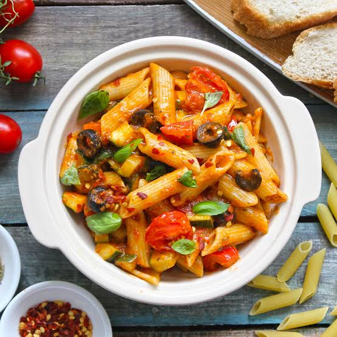

Pasta Recipe

Description
So here we are going to delve into the italian cuisine and preapre one of its most relished dish, that is Tomato Pasta
Ingridients
- 1 cup Penne/Macaroni
- 1/3 cup extra virgin olive oil
- Sweet Corn
- Salt and Black Pepper
- Ripe tomatoes
- 2 Cheese slices
Steps
- Bring a large pot of lightly salted water to a boil. Add penne and cook, stirring occasionally, until tender yet firm to the bite, about 11 minutes.
- Meanwhile, heat olive oil in a skillet over medium-high heat. Add tomatoes and salt to taste. Cook gently, stirring occasionally, until tomatoes are soft and have released their juices, 5 to 10 minutes.
- Drain the pasta and immediately add to the pan of tomatoes. Reduce heat to low and toss to coat. Add cheese slices, and basil and stir through. Season with salt and pepper. Serve immediately.